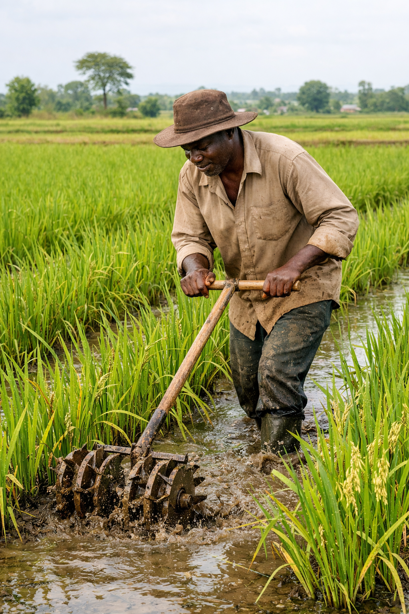

Weeding
Keeping rice fields weed free
Effective weeding is critical to minimize competition for nutrients and sunlight. Ahero farmers use a combination of manual, mechanical and chemical methods.
Manual weeding
Hand weeding removes weeds between rows and is ideal for small fields and early stages.
Mechanical weeding
Weeders and hand tools allow fields to be cleaned faster while reducing labor intensity.
Chemical weeding
Herbicides are used when weed pressure is high and manual removal becomes impractical.
Weeding procedures
Best practices for weed control
Early and accurate weeding maintains good field hygiene and improves crop yield.
- Remove weeds early.
- Weed between rows.
- Apply herbicides correctly.



Spraying herbicides
Use approved herbicides in a controlled spray to reduce tough weed pressure after manual weeding and protect your rice crop.

Weeding operations
See how weeding is carried out in rice fields and why timing is critical.